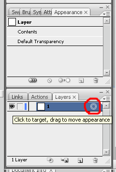
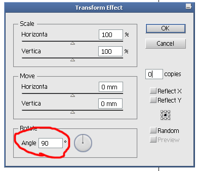
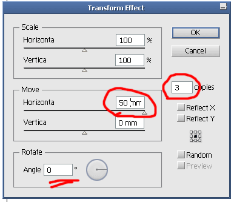
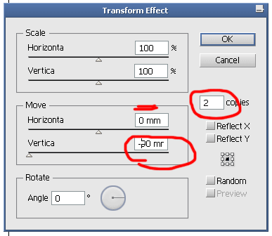
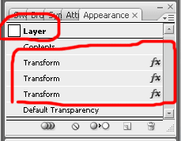
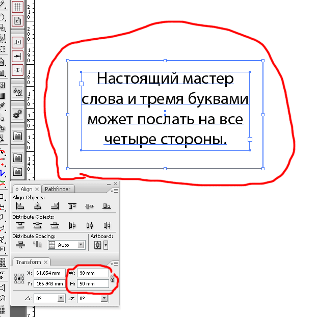
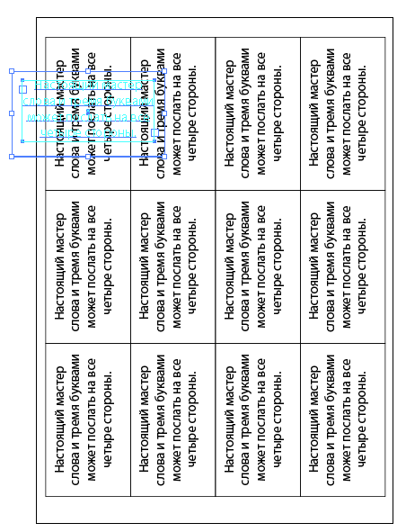

Разбросать визиточки из Appearance
И снова здрасте!
Решил в отдельную тему оформить, ибо много писанины.
Еще один пример грамотного использования палитры Appearance.
Допустим, вам необходимо разложить на листе макетик (например визитка) n-ое число раз.
Допустим, вы это делаете с завидным постоянством, и вас уже мутит от этого действа, и ваши руки гладят клавиатуру неосознанно размножая макет по листу.
Допустим, вы тихо ненавидите скрипты, директора, и тупо хотите на Кубу.
Тогда делаем так. Создаем шаблон в люстре, не простой, а злотой =)
Короче.
Допустим надо размножить на А4 визитки 90x50 mm (вылеты под обрез не учитываем, не до них щас).
Создаем нужного размера лист, на котором будем заниматься размножением.
В палитре Layers у нас всего лишь один слой и он пуст.
Щелкаем мышкой по пимпе, что изображена на рисунке.

лезем в меню Effect-Distor & Transform - Transform
В открывшемся окошке меняем угол на 90 или -90 градусов.

Далее снова в меню Effect-Transfrom, нажимаем кнопочку Apple New Effect (с галочкой - это на любителя, сами разберетесь)
В открывшемся окошке меняем только перемещение по горизонтали и кол-во копий визитки

Далее снова в меню Effect-Transfrom, нажимаем кнопочку Apple New Effect
В открывшемся окошке меняем только перемещение по вертикали и кол-во копий визитки

Вот и все. Шаблон готов. Сохраняем его как шаблон такой-то. Палитра Appearance должна быть такого вида:

Как это работает?
А просто. Скопируйте в этот слой любой объект размером: width = 90 mm и height = 50 mm

и увидите, что получится.

Для того, чтобы отцентровать получившееся, необходимо залезть в меню Object-Expand Appearance. После чего, используя палитру Align, отцентровать относительно листа получившееся.
ЗЫ. Можно конечно довести всё совсем до полного автоматизма. То есть вставил визитку в такой слой, и она и отцентровалась, и повернулась и т.п. Но это уже сами додумывайте.

Санчос, ты по что название темы почикал? :D :D :D Такая красотень была... :P
Слишком длинные название не везде в дизайне смотрятся нормально
Вот так, значит мы заговорили... Я тут, понимаешь, умираю в дебрях кода сайта, пытаясь отловить баги, и что? Вот она, черная неблагодарность... Нет, не могу я так работать. Работать в обстановке зависти и недоброжелательства :D :ag: Завтра хоть расскажи что было, интересно же всё-таки. Слушай, Санчосо, а здесь тег off не приаттачить никак? Ну, чтобы сворачивать такие камменты.
qsedftghk,
Красиво,это я насчет решеня подобных задач.
Безобразно, это я насчет корявых красных обводок.Как рисовать круги и прямоугольники научить? :P :D
Я тут не красоту навожу. Это сделано специально. Дабы глаз смотрел туда, где раздражение возникает :D . Дабы лишний раз не переспрашивали, куда же всё-таки тыкать мышкой. И потом, сразу видно - не подделка, а настоящий скриншот, ручной работы :D :P
Чего уж там ,рисуй кpякозябры ,как тебе нравиться лишь бы план захвата Пентагона был всем понятен. :D
В данном случае ещё одно преимущество этой методики,возможность редактирования текста только на базовой визитке с моментальным изменением
исправлений на всех скопом дочерних визитках.
Формат А4,лет 20 не видел :( и стандарт визиток у нас 51mm x 89mm
Я лично живу вне ГОСТ`а, гыгы, меня как попросят сделать так и наваяю. Да, хоть 1 на 1 см! :D Честно говоря, я как-то вообще не припомню, чтобя я раскладывал визитки на A4. Обычно мы визитки приаттачиваем к каким-нибудь другим сборкам, где есть местечко на печатном листе.
Я вот палитру Appearance чаще всего использую для работы с текстом. Шрифты с градиентами, бликами, свечениями, и прочей попсой, идут на ура!
Это у тебя кореловские привычечки еще не выветрились :D Шрифты с градиентами... Фу, Санчосо. Чую, ща больно будет :ae:
Санчос, бросай все нафиг, приезжай к нам. Мы с тобой замутим, что-нить.
qsedftghk, в умелых руках и бычий *** — верёвка :D